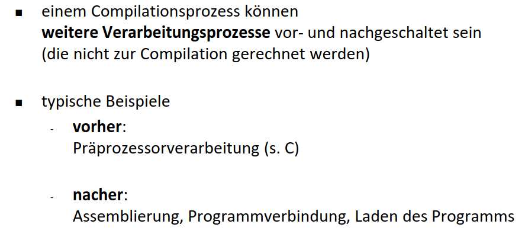
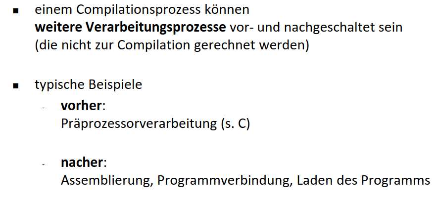

Kapitel:
Automat
Was ist ein Compiler?
Compilationsprozess
Formalismen zur Sprachbeschreibung
Lexikalische Analyse: Der Scanner
Syntaktische Analyse: Der Parser
Statische Semantikanalyse
Laufzeitsystem
Automat
Ein Automat oder eine abstrakte Maschine ist in der Informatik, speziell in der Automatentheorie, das Modell eines
digitalen, zeitdiskreten Rechners.
Verhalten eines Automaten
Das grundsätzliche Verhalten eines Automaten ist immer gleich: Dem Automaten wird von außen eine Eingabe als Folge
von Zeichen vorgelegt. Der Automat befindet sich in einem bestimmten Zustand. Jedes Mal, wenn ein Eingabezeichen
eintrifft, kann sich abhängig vom Eingabezeichen und dem gegenwärtigen Zustand ein neuer Zustand, der Folgezustand,
einstellen (Zustandsübergang oder Transition). Man kann die Menge der möglichen Zustandsübergänge, die das Verhalten
des Automaten definiert, als das Programm des Automaten verstehen.
Deterministische und nichtdeterministische Automaten
Wenn der Folgezustand durch den gegenwärtigen Zustand und das Eingabezeichen immer eindeutig gegeben ist, dann
spricht man von einem deterministischen Automaten. Allgemein aber kann man auch einen Spielraum (Freiheitsgrade) für
die Zustandsübergänge zulassen. Der Automat darf dann auf dasselbe Paar von Zustand und Eingabezeichen unter
mehreren möglichen Kandidaten einen Folgezustand willkürlich wählen. Dann spricht man von einem
nichtdeterministischen Automaten. Der Nichtdeterminismus ist dann willkommen, wenn man das Verhalten der Umgebung
modellieren möchte, das man nicht völlig genau kennt (don't know), oder wenn man Möglichkeiten für verschiedene
Implementierungen offenlassen möchte (don't care).
Automaten mit und ohne Ausgabe
Automaten, die nur ihre Zustandsübergänge abwickeln, nennt man auch Transitionssysteme.
Daneben gibt es auch Automaten, die eine gewisse Teilmenge ihrer Zustände als Endzustände auszeichnen. Wenn ein
Eingabewort den Automaten von einem ausgezeichneten Zustand, dem Startzustand, in einen der Endzustände führt, dann
sagt man, der Automat akzeptiert das Eingabewort. Einen solchen Automaten nennt man deswegen einen Akzeptor. Ein
Akzeptor eignet sich dazu, eine formale Sprache zu definieren, nämlich die Menge aller endlichen Wörter, die der
Automat akzeptiert.
Schließlich gibt es noch Automaten mit Ausgabe, sogenannte Transduktoren. Sie ordnen entweder jedem Zustand
(Moore-Automaten) oder jedem Paar aus Zustand und Eingabezeichen (Mealy-Automaten) ein Ausgabezeichen zu. Auf diese
Weise bildet ein Automat eine Verarbeitungseinheit.
Klassen von Automaten
- Turingmaschinen (DTM/NTM)
Eine Turingmaschine hat neben dem inneren Zustand auch Zugriff auf ein unendliches Band, auf das ein
beweglicher Schreib-/Lesekopf Zeichen schreiben und später lesen kann. Beide Klassen akzeptieren die
Typ-0-Sprachen (Rekursiv aufzählbare Sprache). Durch die Turingmaschine wird außerdem der Begriff der
Berechenbarkeit definiert.
- Linear beschränkte Automaten (DLBA/LBA)
Die linear beschränkten Automaten unterscheiden sich von den Turingmaschinen nur dadurch, dass der
zugängliche Teil des Bandes durch die Größe der Eingabe beschränkt ist. Nichtdeterministische LBA
akzeptieren genau die Typ-1-Sprachen (kontextsensitive Sprachen); die Frage, ob das auch auf
deterministische LBA zutrifft, ist ein noch offenes Problem.
- Kellerautomaten (DPDA/PDA)
Ein Kellerautomat hat neben einem von endlich vielen inneren Zuständen auch Zugriff zum Keller, einem
Stapel, auf dem Zeichen zur späteren Verarbeitung zwischengespeichert werden können. Die PDAs akzeptieren
die Typ-2-Sprachen (Kontextfreie Sprachen). Die DPDAs akzeptieren die deterministisch kontextfreien
Sprachen.
- Endliche Automaten (DFA/NFA)
Ein endlicher Automat kennt nur endlich viele Zustände. Beide Klassen akzeptieren die Typ-3-Sprachen
(Reguläre Sprachen).
Was ist ein Compiler?
Definition Compiler
Ein Compiler ist
ein Computerprogramm, das ein (anderes) Programm,
das in einer bestimmten Programmiersprache geschrieben ist,
in eine bestimmte Form so überführt wird,
die von einem Computer ausgeführt werden kann:
- eine Assemblersprache
- maschinell ausführbare Maschinensprache
- Bytecode überführen
Ein Compiler, der
den Quellcode einer Hochsprache in den Quellcode einer
anderen Hochsprache übersetzt,
wird als Transcompiler bezeichnet (Beispiel: Pascal -> C)
Compilationsprozess
 



Formalismen zur Sprachbeschreibung

Lexikalische Analyse: Der Scanner


Syntaktische Analyse: Der Parser
Ein Parser ist ein Computerprogramm, das in der Informatik für die Zerlegung und Umwandlung einer Eingabe in ein für
die Weiterverarbeitung geeigneteres Format zuständig ist. Häufig werden Parser eingesetzt, um im Anschluss an den
Analysevorgang die Semantik der Eingabe zu erschließen und daraufhin Aktionen durchzuführen.
Statische Semantikanalyse


Laufzeitsystem